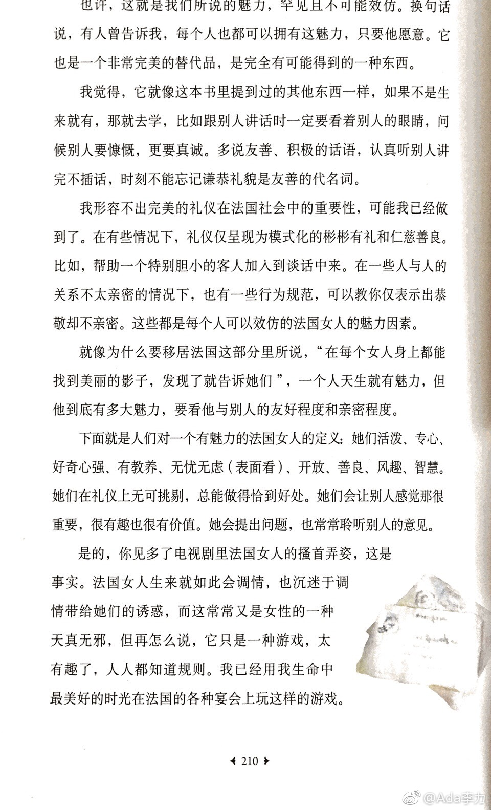
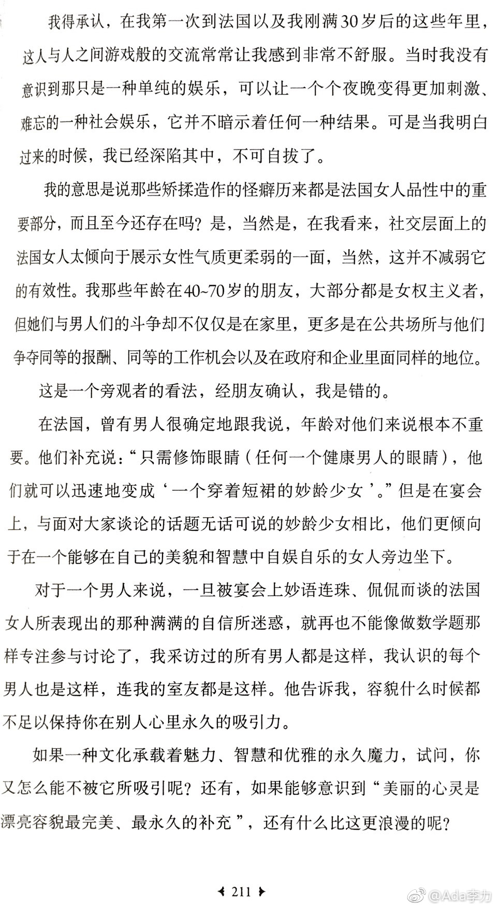

#读书# 美国好莱坞发起的“Me too”反行骚扰运动也影响到中国，几个被扒皮的流氓教授都是被在海外就学工作的女学生实名举报出来的。而之后法国女明星发布联合声明，认为“Me too”的打击面过广，有些性骚扰行为，在她们看来是异性间的调情游戏。女性往往还是主动发起游戏的那位。这本《跟法国女人学雅致》的作者来自美国，在法国生活了20多年，对法国女人的调情游戏，有自己的观察。女人不把调情看成性骚扰，很大一部分原因是男人认为女人的年龄不重要。“美丽的心灵是漂亮容貌最完美，最永久的补充”。
回复@郭芳gf:这本书只有这段有意思，不值得买。尼娜加西亚的《我的风格小黑皮书》//@郭芳gf:请问这本书叫什么名字？看起来挺有意思的@Ada李力:#创业#在家工作过一段时间，在绝大多数时间里，在家办事效率比不上在办公室。但在家工作确实很吸引人，要有些手段让自己保持紧张状态。比如，跟要去办公室一样梳妆打扮并穿可以随时出门见客户的衣服。